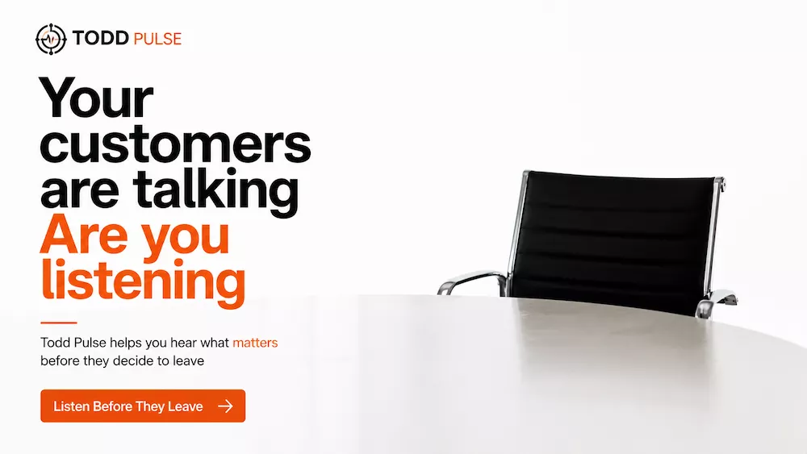
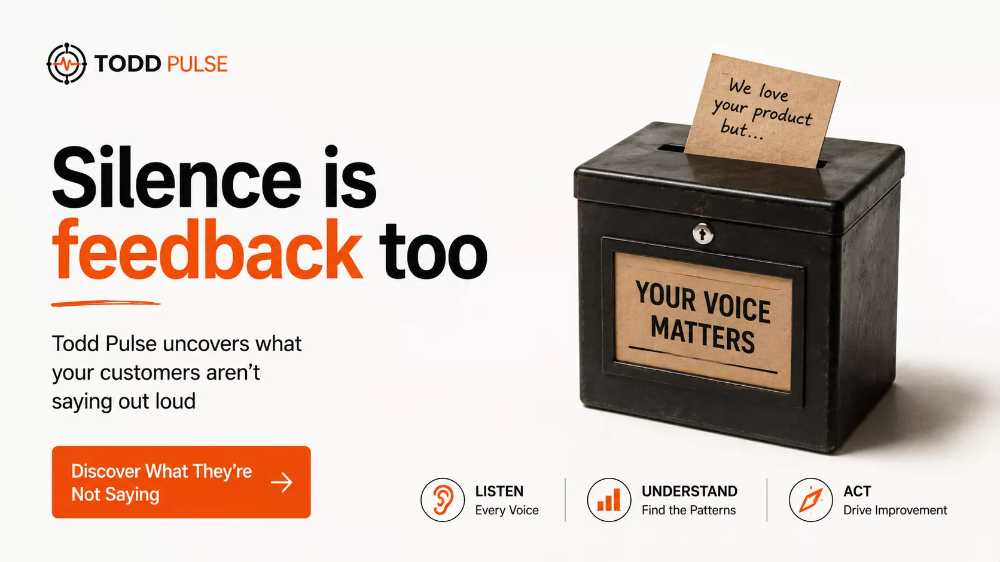

Clients kept needing a cleaner way to test assumptions before acting on them. Teams often move forward on guesses, scattered comments, or the loudest opinion in the room. Pulse gives you a simple way to ask the right question and see the signal before you decide.

When the room is full of opinions, it is easy to mistake confidence for evidence. We built Pulse for the moment clients kept running into before the decision: ask the question, gather the response, and turn feedback into signal you can use.

You stop letting the loudest opinion carry the decision and start using a signal people actually gave you.
That is the difference between collecting feedback and using it.
Pulse is structured around the life of a decision. The point is not to send a form and forget it. The point is to ask something useful, gather response, and make the next move with less guessing.
Shape the question around the decision you actually need to make.
Put the question in front of the people whose response matters.
Read the response pattern instead of relying on scattered comments.
Use what people actually said to guide the next move.
Start with the decision your team is currently guessing about. Ask one clear question and use the response to reduce uncertainty.
As survey activity grows, Pulse helps teams move from simple collection to repeatable signal they can use across teams, programs, and outreach.
Use the part of the workflow that matches what you need right now.
Open Pulse and start building the survey flow from the main entry point.
Review surveys that already exist and see what is in motion.
Jump straight into survey creation when you already know what needs to be asked.
Start with survey design that makes the responses worth reading.
Use Pulse to see what is coming back instead of wondering whether anyone engaged.
Use the signal to shape the next message, move, or adjustment.

Create the survey. Gather the response. Read the signal. Decide what happens next. That is the Pulse pattern.
Pulse is for creating surveys, gathering feedback, and turning response into signal that helps teams make better decisions.
No. It is a way to create, publish, review, and use survey response so feedback actually shapes what happens next.
Yes. Pulse is designed so people can explore the workflow, understand the product, and then decide how broadly they want to use it.
Pulse fits the larger system. It helps teams gather signal that can inform outreach, moves, documents, and what happens next across the workflow.
Ask the question before the assumption hardens. Pulse helps you turn response into a clearer next move.
Need the broader story? See TODD